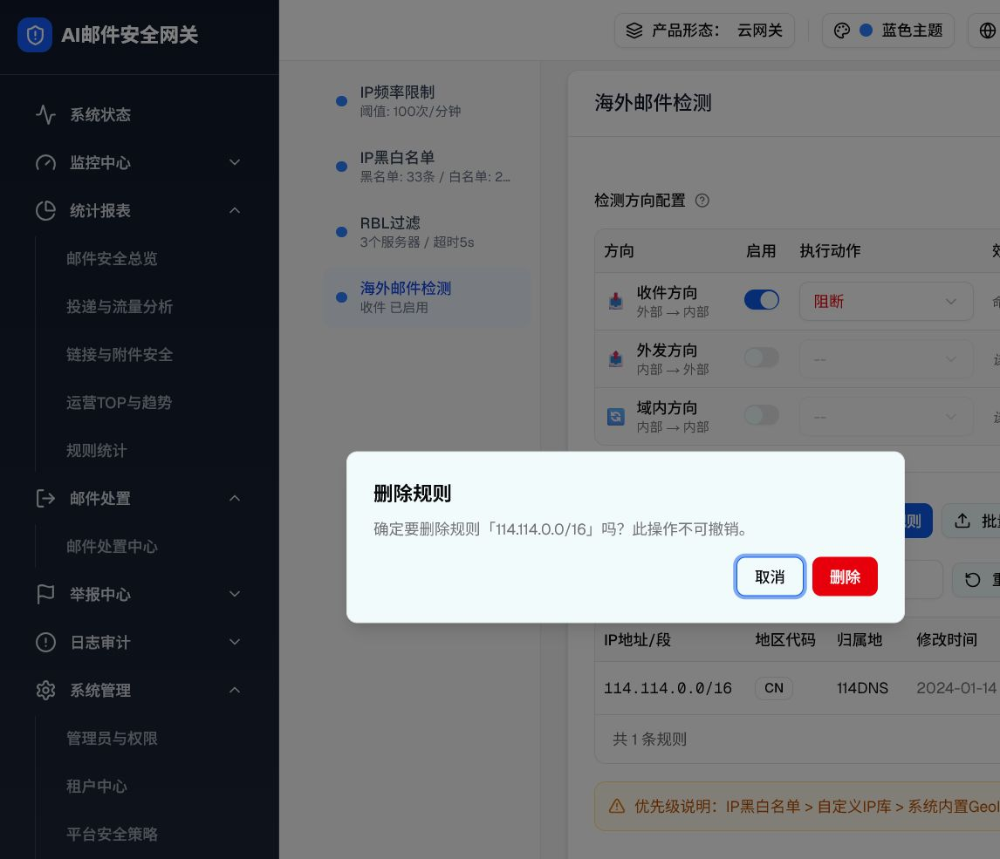

层级 5：GeoIP 删除二次确认
触发路径：规则行 → 删除图标。目标规则先写入 deletingGeoIpRule，确认后才移除。
可交互预览
114.114.0.0/16 · CN · 114 DNS组件交互明细
| 步骤 | 状态迁移 | 键盘/关闭 | 结果 |
|---|---|---|---|
| 点击行内删除 | deletingGeoIpRule=目标规则，AlertDialog open | 焦点进入弹窗 | 列表暂不改变 |
| 取消 | 清空 deletingGeoIpRule，关闭弹窗 | Esc/遮罩按组件规范处理 | 目标规则保留 |
| 确认删除 | 按 id 过滤列表，关闭弹窗 | 焦点返回列表区域 | 规则移除；当前页为空时应回退有效页 |
真实页面与 DOM

agent-browser 实测文案：“确定要删除规则「114.114.0.0/16」吗？此操作不可撤销。”取消后规则仍在；再次打开并确认后搜索结果为 0。
| 检查项 | demo | 本页 | 结果 |
|---|---|---|---|
| 语义角色 | alertdialog | role=alertdialog | 一致 |
| 按钮 | 取消 / 删除 | 取消 / 删除 | 一致 |